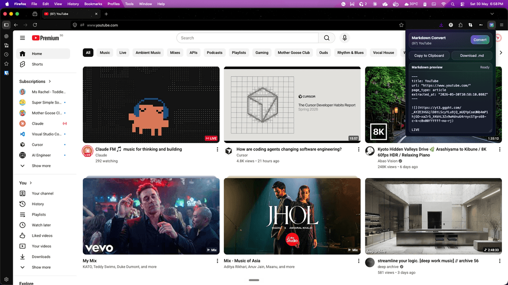
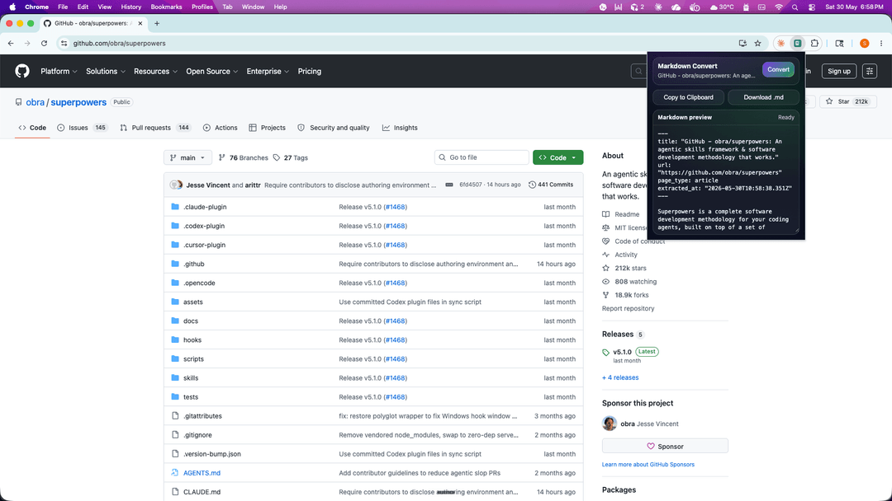
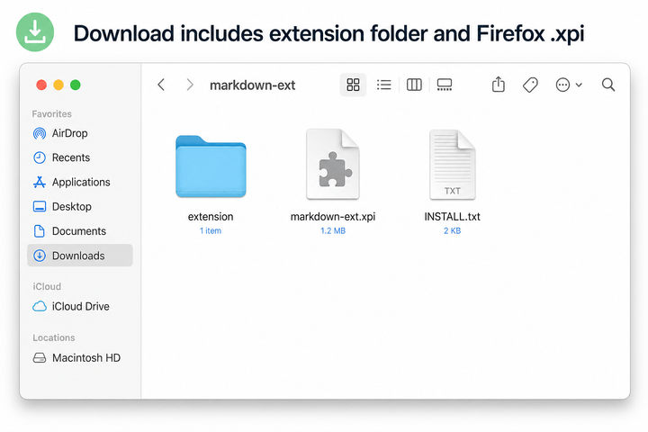
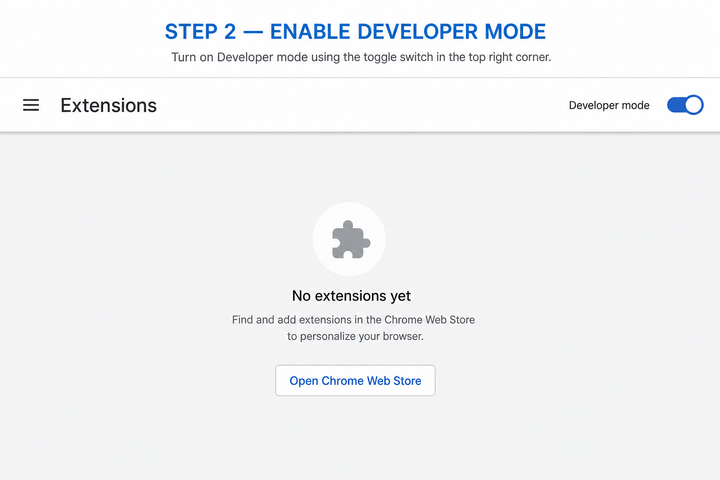
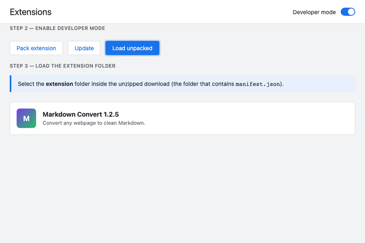
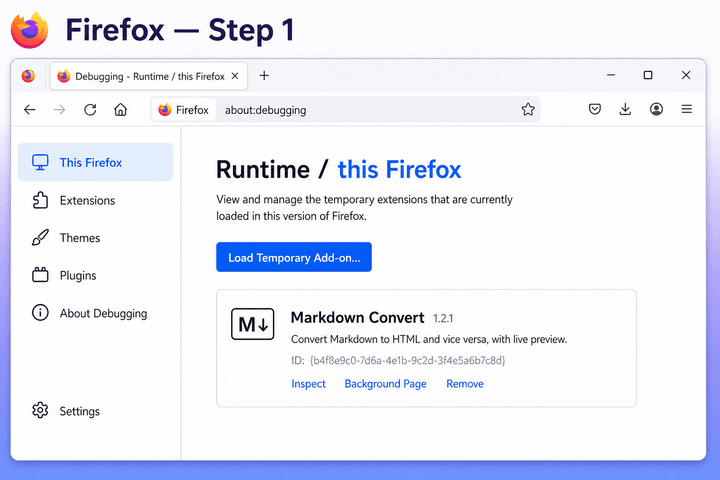
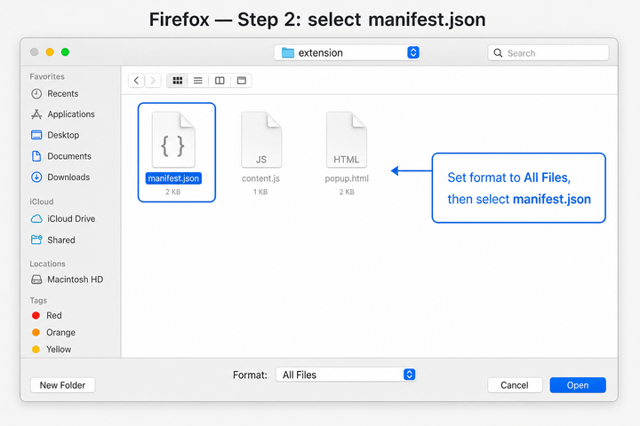
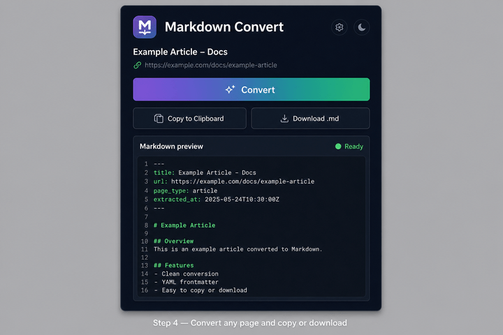

Any page, turned into clean Markdown.
Click once. Markdown Convert lifts the real content off the page — no menus, no ads, no cookie banners — and hands you tidy Markdown to copy or save.

Three small steps, then it gets out of your way.
Smart cleanup
Strips navigation, sidebars, cookie banners and tracking noise. Captures main content plus tables, visible regions, and same-origin embeds; cross-origin embeds are listed with links. YAML frontmatter includes page context.
One click
Open the popup, press Convert. No configuration, no sign-up, nothing to learn. It just reads the page.
Copy or save
Preview the Markdown, copy it to your clipboard, or download a
.md file with a tidy header on top.
Articles, docs, YouTube, repositories — anything.

Installed in under a minute.
Pick your browser. The download includes chrome-extension/ and
firefox-extension.xpi — read
START-HERE.txt after unzipping.
Download and unzip
Click Chrome extension above. Unzip and open the
chrome-extension/ folder (contains
manifest.json).

Open the chrome-extension folder — not the .xpi file.
Enable Developer mode
Open chrome://extensions and turn on Developer mode (top-right).

Developer mode toggle — top right of the Extensions page.
Load unpacked
Click Load unpacked and select the
chrome-extension folder.

Select the folder that contains manifest.json.
Tip: On some Chrome versions you can drag the
chrome-extension folder onto
chrome://extensions.
Convert any page
Visit a page, open the extension, click Convert, then copy or download Markdown. See After install for the popup preview.
Firefox
Install via about:debugging only
-
Use
about:debugging, notabout:addons(unsigned extensions show “corrupt” there). - Download Firefox extension above only to save the file — load it from the debugging dialog.
-
In the file picker, choose All Files, then
chrome-extension/manifest.jsonorfirefox-extension.xpi.
Download and unzip
Same zip as Chrome — see Chrome step 1. You need
chrome-extension/manifest.json or
firefox-extension.xpi from the unzipped folder.
Open about:debugging
Open about:debugging → This Firefox →
Load Temporary Add-on…

Type about:debugging — not about:addons.
Select manifest.json
Set the file picker to All Files, open
chrome-extension/, and select
manifest.json (or pick
firefox-extension.xpi from the zip root).

All Files → manifest.json inside
chrome-extension/.
Convert any page
Visit a page, open the extension, click Convert, then copy or download Markdown. See After install for the popup preview.
Tip: Grayed files? Use All Files. “Not been
verified”? You opened about:addons — use
about:debugging. The add-on is removed when you fully quit
Firefox.
After install
Chrome and Firefox use the same popup — convert any page, then copy or download Markdown.

Extension popup with preview and copy/download actions.